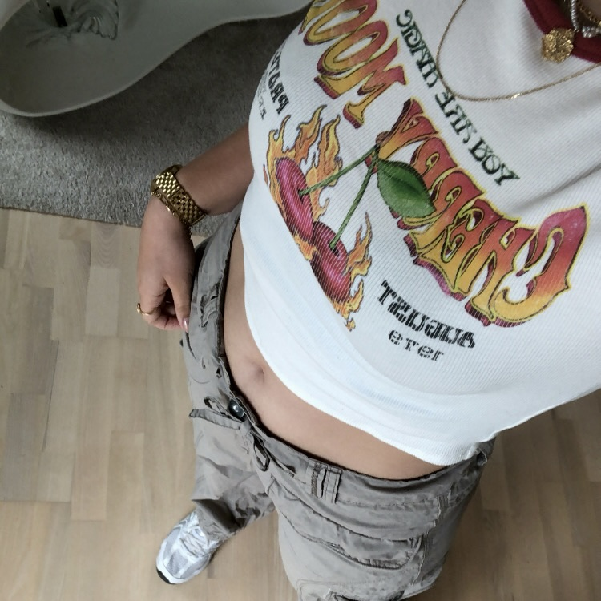

5 fede graffiske
croptops til dig!
Du mangler helt sikkert
disse
lækre croptops
med fedt print
i din
garderobe.
Læs mere

Trender nu
-
Sådan finder du
solbriller på
budget
Til dig der gerne vil se godt ud
uden at bruge en formue.
Gør nogle gode fund i genbrug
Læs mere
-
De ultimative
fashionikoner
Bratz-pigerne rocker
Y2K stilen
Læs mere
-
5 fede graffiske
croptops til dig
Du mangler helt sikkert
disse
lækre croptops
med fedt print
i din
garderobe.
Læs mere
-
De ultimative
fashionikoner
Bratz-pigerne rocker Y2K stilen
Læs mere